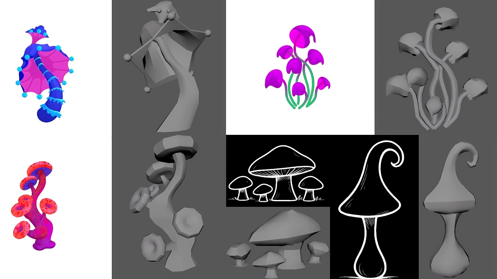
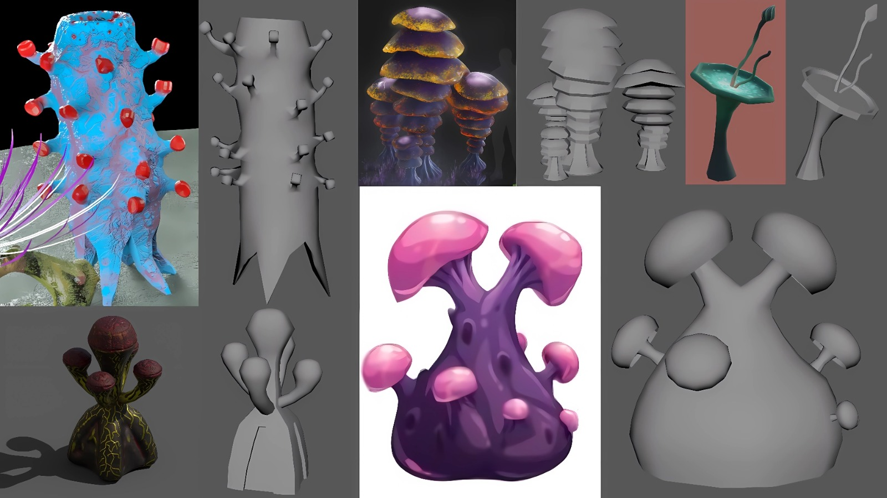
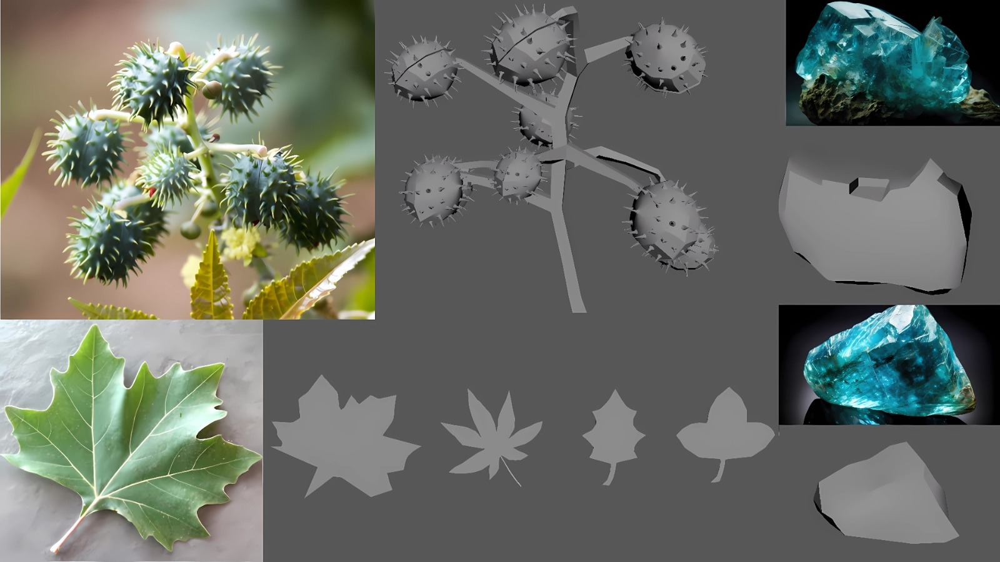
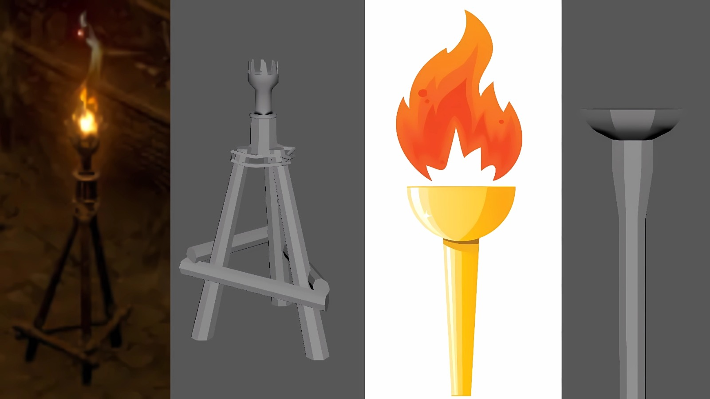
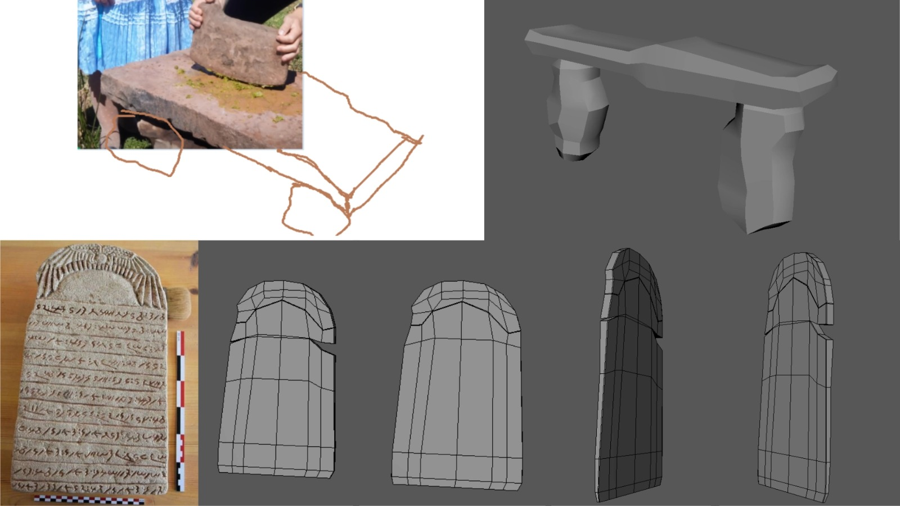
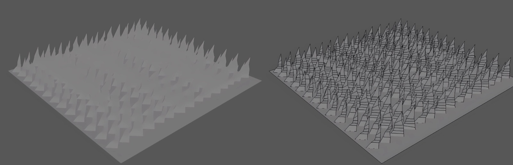
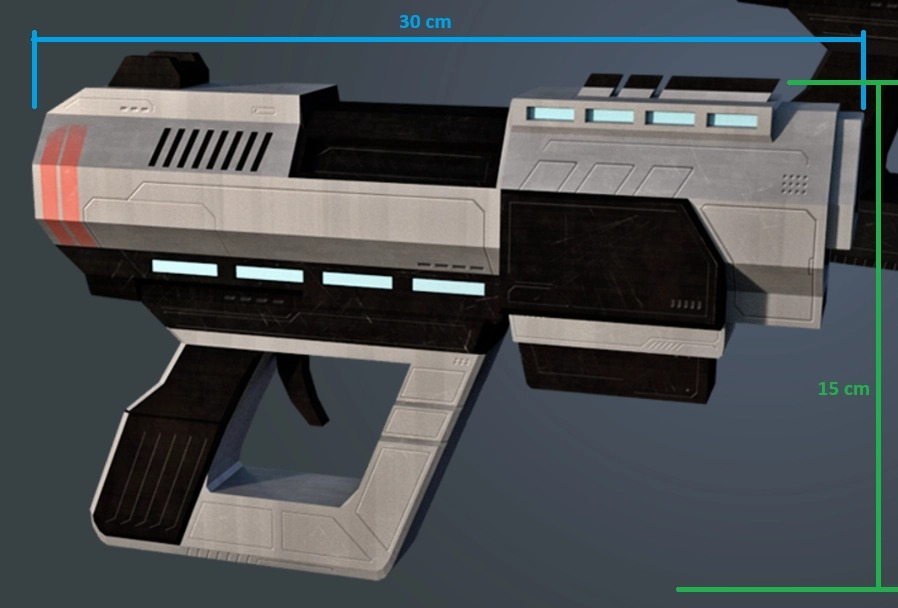

Whiskered Wanderer
Informacion del Proyecto
- Rol→ Modelador 3D
- N° de Integrantes→ 9
- Tiempo→ 1 año
- Motor→ Unity
- Niveles→ 4
Herramientas Usadas
- Autodesk Maya

- Unity

- C#

- GitHub

Acerca del Proyecto
Whiskered Wanderer es una experiencia de exploración y puzles en tercera persona donde el jugador se adentra en antiguas ruinas repletas de mecanismos desconocidos. A lo largo de la aventura, deberá utilizar la tecnología de Feligryth para avanzar por escenarios marcados por el legado de cuatro culturas diferentes, mientras busca la reliquia de Feligryth.
El juego cuenta con 4 niveles, cada uno con desafíos y rompecabezas únicos que el jugador deberá superar para continuar avanzando en la aventura.
Lo que realicé
Aunque mi especialidad principal es la programación de videojuegos, en este proyecto participé principalmente en el desarrollo de modelos 3D de entorno (props) utilizados para construir la ambientación del juego. Para ello, empleé Autodesk Maya en la creación y modelado de los distintos assets.
En esta sección se muestra el desarrollo de vegetación, hongos, piedras y assets que ambientan el mundo del juego. (Todos los elementos fueron modelados con técnicas Low-poly).






La pistola futurista forma parte de los assets del proyecto. A la derecha se muestra el wireframe del modelo y a la derecha la referencia utilizada para el diseño.

Los siguientes videos presentan parte del proceso de creación de los modelos 3D mostrados anteriormente. En ellos se puede observar el los modelados por completo